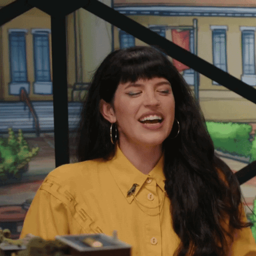

<!DOCTYPE html>
<html>
<head>
    <link rel="preconnect" href="https://fonts.googleapis.com">
    <link rel="preconnect" href="https://fonts.gstatic.com" crossorigin>
    <link href="https://fonts.googleapis.com/css2?family=Monoton&display=swap" rel="stylesheet">
    <link href="https://fonts.googleapis.com/css2?family=Monoton&family=Teko:wght@300..700&display=swap" rel="stylesheet">
    <link href="https://fonts.googleapis.com/css2?family=Ubuntu:ital,wght@0,300;0,400;0,500;0,700;1,300;1,400;1,500;1,700&display=swap" rel="stylesheet">

    <meta charset="utf-8">
    <meta name="viewport" content="width=device-width, initial-scale=1">
    <link rel="stylesheet" type="text/css" href="brennan.css">
    <title>Emily Axford</title>
</head>
</html>

<body>
    <div class="heading">

        <h1> Emily Axford </h1>

        

        <p id="box">Emily Axford is highly regarded as one of the most chaotic D&D players of all time, not only as an Intrepid Hero, but in other Actual Play groups like NADDPOD as well. She is a Musician, a German Shepard, and an overall fireball.</p>

        <div class="clps">
            <details>
                <summary>Where to find Emily</summary>
                <ol>
                    <li> <a href="https://www.dropout.tv"> Dropout.tv </a></li>
                    <li> <a href="https://open.spotify.com/show/5GcTIDkgnB9wP6CmUyOSqa?si=0f3c34632e0a436d">NADDPOD</a></li>
                    <li> <a href="https://open.spotify.com/artist/2MCgYKm2tYMHueBy3dhLdY?si=qyG1B0vEQ9SkHk7fmdy2zw">Emily's Spotify</a></li>
                </ol>
            </details>
        </div>

        <table class="seasonstable">
            <thead>
                <tr>
                    <th>Season Number</th>
                    <th>Season Title</th>
                    <th>Season Type</th>
                    <th>Character Played</th>
                </tr>
            </thead>
            <tbody>
                <tr>
                    <td>1</td>
                    <td>Fantasy High</td>
                    <td>Intrepid Heroes</td>
                    <td>Figueroth Faeth</td>
                </tr>
                <tr>
                    <td>3</td>
                    <td>The Unsleeping City</td>
                    <td>Intrepid Heroes</td>
                    <td>Sofia Lee (née Bicicleta)</td>
                </tr>
                <tr>
                    <td>4</td>
                    <td>Fantasy High: Sophmore Year</td>
                    <td>Intrepid Heroes</td>
                    <td>Figueroth Faeth</td>
                </tr>
                <tr>
                    <td>6</td>
                    <td>A Crown of Candy</td>
                    <td>Intrepid Heroes</td>
                    <td>Princess Jet Rocks/Queen Saccharina of House Frostwhip</td>
                </tr>
                <tr>
                    <td>8</td>
                    <td>The Unsleeping City: Chapter II</td>
                    <td>Intrepid Heroes</td>
                    <td>Sofia Lee</td>
                </tr>
                <tr>
                    <td>13</td>
                    <td>A Starstruck Odyssey</td>
                    <td>Intrepid Heroes</td>
                    <td>Sundry Sidney</td>
                </tr>
                <tr>
                    <td>15*</td>
                    <td>A Court of Fey and Flowers</td>
                    <td>Side Quest</td>
                    <td>Lady Chirp Featherfowl</td>
                </tr>
                <tr>
                    <td>16</td>
                    <td>Neverafter</td>
                    <td>Intrepid Heroes</td>
                    <td>Ylfa Snorgelsson</td>
                </tr>
                <tr>
                    <td>21</td>
                    <td>Fantasy High: Junior Year</td>
                    <td>Intrepid Heroes</td>
                    <td>Figueroth Faeth</td>
                </tr>
            </tbody>
        </table>

        <b id="bold">*entries marked with an asterisk are run on systems other than traditional dungeons and dragons, as listed below</b>

        <div class="list">
            <ul>
                <li>15 - A Court of Fey & Flowers - run on Good Society</li>
            </ul>
        </div>
</body>